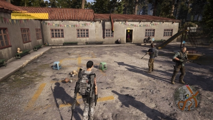
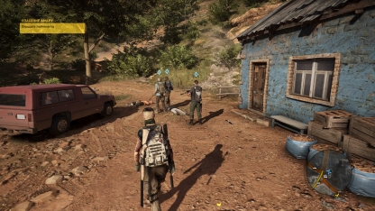
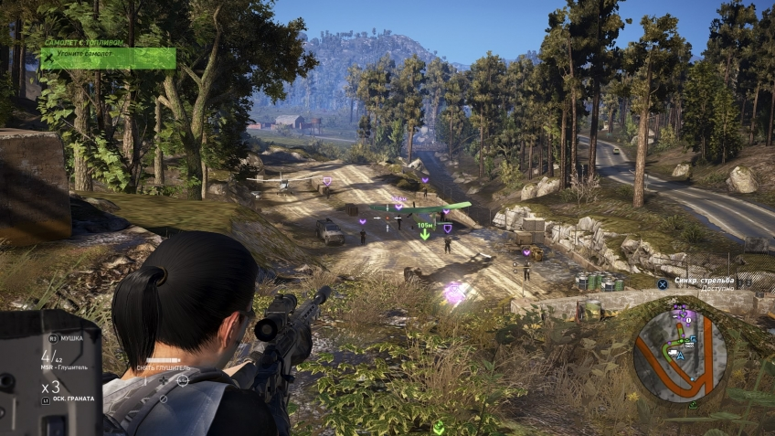

 В этот раз Ghost Recon рассказывает о том, как неугомонный отряд «призраков» сражается с картелем, захватившим целую страну. Но, несмотря на участие в подготовке проекта известных писателей (например, Дона Уинслоу, автора романов «Картель», «Власть пса» и «Сатори»), история здесь вторична. Да, создатели провели огромную работу: структура здешнего картеля, его философия, биографии боссов, куча разбросанных документов, пропаганда по радио, забавные разговоры членов отряда — все это гигантский труд, и мифология у игры действительно прекрасна.
 Знаменательных событий вокруг картеля происходит масса, а отдельные персонажи быстро врезаются в память. Тот же Мечтатель, главный антагонист, может похвастать и занимательной биографией, и яркой внешностью с татуировками на лице, и примечательными чертами характера. Он очень набожен и даже написал свое подобие Библии, никогда не лжет, но при этом убил и еще убьет сотни человек. Почти идеальный образ злодея — харизматичный и противоречивый.
Только вот все это вынесено на фон и подается исключительно с помощью брифингов, документов и редких коротеньких диалогов между «призраками». Зрелищных кат-сцен и неожиданных поворотов, увы, нет — сюжет выдается порционно и по «схеме». Что огорчает, ведь у этих персонажей и здешнего мира огромный потенциал.
Отказавшись от полноценной истории, разработчики наверняка ожидали, что игроки начнут создавать свои собственные уникальные ситуации. В распоряжении «призраков» — целый мир с кучей заданий, а главное, герои сами вольны решать, в каком порядке выполнять миссии и с чего начать уничтожение картеля.
